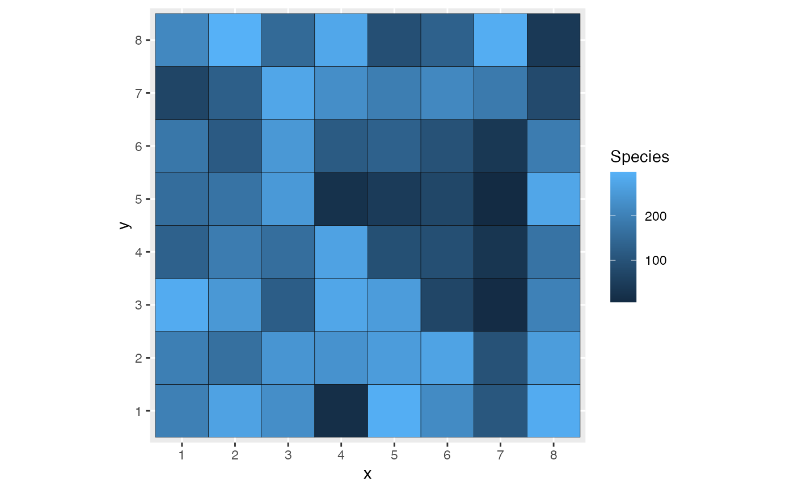

The model represents a community, i.e. a set of interacting objects called agents.
Their location is described by a pattern that evolves along a timeline.
patternThe pattern which describes the location of agents.
typeThe type of individuals. Informational only.
timelineA numeric vector.
last_timeThe last time (in the time line) the model has been run.
run_patternsThe past patterns of the model, obtained by run and saved.
new()Create a new instance of this R6 class.
community_model$new(pattern = NULL, timeline = 0, type = "Species")plot()Default plot method: plots the pattern. To be overridden.
community_model$plot(
time = NULL,
sleep = animation::ani.options("interval"),
...
)autoplot()Make a ggplot2::ggplot of the pattern. To be overridden.
run()Run the model.
community_model$run(
animate = FALSE,
sleep = animation::ani.options("interval"),
save = FALSE,
more_time = NULL
)animateif TRUE, the evolution of the model is shown in an animation.
sleepThe time (in ms) to sleep between each step of the evolution of the model.
saveif TRUE, the evolution of the model is saved.
if FALSE, only the final step is saved.
more_timeA numeric vector that extends the timeline.
along_time()Apply the function FUN to the saved patterns along time and return
a dataframe with columns x for time and y for the results of FUN.
FUN must return a single value.
myModel <- community_matrixmodel$new()
myModel$autoplot()
